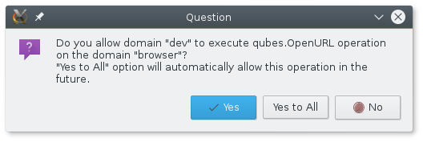

Qubes Tip: Opening links in your preferred AppVM
If you use Qubes like I do, you have many different AppVMs to compartmentalize different programs. You might have one VM for your email client, one for your jabber client, one for your password database. But if you click a link in any of these programs, it sure would be nice if that link opened in the browser VM of your choice. This isn’t all that hard to setup.
The command qvm-open-in-vm lets you open a document or a URL in another VM.
user@dev:~$ qvm-open-in-vm
Usage: /usr/bin/qvm-open-in-vm vmname filename
If you have a terminal open in your dev VM and want to load https://micahflee.com/ in your browser VM, you can do it like this:
user@dev:~$ qvm-open-in-vm browser https://micahflee.com
You get a prompt in dom0 asking if you really want to allow this cross-VM behavior. When you choose yes, a new tab loading my website opens in your default browser in your browser VM.

Excellent. Now let’s say you want this to automatically happen every time you click any link. You can do this by creating a .desktop file that advertises itself as a handler for http/https links, and then setting this as your default browser.
Open a text editor and copy and paste this into it:
[Desktop Entry]
Encoding=UTF-8
Name=BrowserVM
Exec=qvm-open-in-vm browser %u
Terminal=false
X-MultipleArgs=false
Type=Application
Categories=Network;WebBrowser;
MimeType=x-scheme-handler/unknown;x-scheme-handler/about;text/html;text/xml;application/xhtml+xml;application/xml;application/vnd.mozilla.xul+xml;application/rss+xml;application/rdf+xml;image/gif;image/jpeg;image/png;x-scheme-handler/http;x-scheme-handler/https;
Replace browser in the line that says Exec=qvm-open-in-vm browser %u with whatever AppVM you want to open links in. Save this file to ~/.local/share/applications/browser_vm.desktop.
Finally, set it as your default browser (like I’m doing here in my email VM):
user@email:~$ xdg-settings set default-web-browser browser_vm.desktop
Now whenever you click a link in a program running in this VM (such as Thunderbird), it will open that link in your browser VM.